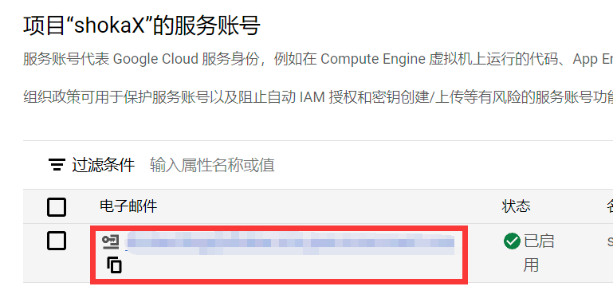
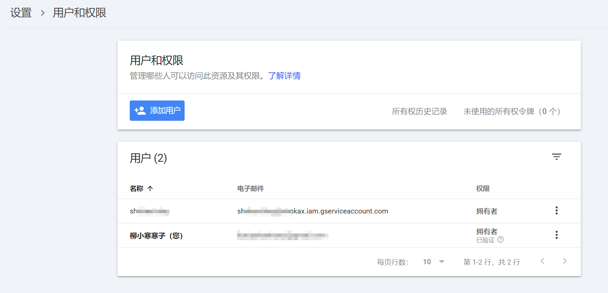

# 序言
Hexo 个人博客搭建完毕后，还是希望被更多有需要的人看到。因此搜索引擎相关 SEO 就需要一定配置。
SEO（Search Engine Optimization）是搜索引擎优化的简称。SEO 就是想办法让你的网站在搜索引擎上更容易被找到。
# 优化关键词
在根目录下的 _config.yml 中修改配置：
# Site | |
title: 跨越屏幕，幸识 | |
subtitle: '' | |
description: What is "LOVE" ? | |
keywords: <你的网站关键词> # 可以设置多个，注意用英文逗号隔开 | |
author: 柳小寒寒子 | |
language: zh-CN | |
timezone: 'Asia/Shanghai' |
# 收录
在谷歌等搜索引擎输入下面格式判断是否被收录：
site:liuxiaohanhanzi.top |
使用站长平台添加主站并验证后，可证明您是该域名的拥有者，可以快捷批量添加子站点，查看所有子站数据，无需再一一验证您的子站点。
-
选择 CNAME 验证比较简单，在域名解析中添加一条记录即可；
-
选择文件验证，目标是在
hexo g生成的 public 文件夹目录下放入下载的 HTML 文件。这里我们将验证文件放在 hexo-theme-shokax/source 文件夹下，再hexo g生成网页，即完成目标。
注：因为站点 source 下面的 html 文件都会被按照主题样式重新渲染，最后 html 文件的内容会被改变，就不能通过验证。此外，为保持验证通过的状态，成功验证后请不要删除 HTML 文件。
# 创建站点地图文件
站点地图是一种文件，您可以通过该文件列出您网站上的网页，从而将您网站内容的组织架构告知 Google 和其他搜索引擎。搜索引擎网页抓取工具会读取此文件，以便更加智能地抓取您的网站。
- 安装，由于博主建立工程时使用的是 pnpm，所以这里在博客根目录运行代码：
pnpm install hexo-generator-sitemap --save | |
pnpm install hexo-generator-baidu-sitemap --save |
- 根目录下的
_config.yml中加入：
Plugins: | |
#- hexo-generator-baidu-sitemap | |
- hexo-generator-sitemap | |
# sitemap 网站地图 | |
sitemap: | |
path: sitemap.xml | |
tag: false | |
category: false | |
#baidusitemap: | |
# path: baidusitemap.xml | |
# tag: false | |
# category: false |
- 运行后在根目录的 public 下面发现生成了 sitemap.xml 以及 baidusitemap.xml，就表示成功了
# 添加 robots.txt
robots.txt 是存放在网站根目录下的一个纯文本文件，它可以指定搜寻引擎爬虫哪些是可以爬的路径，哪些是不能爬的，这也能增强 SEO，以下为我的设置：
User-agent: * | |
Allow: / | |
Allow: /archives/ | |
Allow: /tags/ | |
Allow: /categories/ | |
Allow: /about/ | |
Disallow: /vendors/ | |
Disallow: /fonts/ | |
Disallow: /vendors/ | |
Disallow: /fancybox/ | |
Sitemap: https://liuxiaohanhanzi.top/sitemap.xml // 注：博主把这行删了 | |
Sitemap: https://liuxiaohanhanzi.top/baidusitemap.xml |
# nofollow 组件
nofollow 组件可以对外链添加 rel="external nofollow noreferrer" ，等同于告诉搜索引擎不要追踪此网页上的链接。这样，不安全的、搜索引擎印象不佳的外链就不会影响网站的 SEO，防止了权重流失。
安装方法：
pnpm i hexo-filter-nofollow --save |
在根目录 config.yml 添加如下配置：
nofollow: | |
enable: true # 是否启用 | |
field: site # site 全网站，post 仅文章 | |
exclude: | |
- 'liuxiaohanhanzi.top' # 例外网址 |
# 推送链接
# 提交 sitemap.xml
直接在站长平台输入 sitemap.xml 的地址，通过站点地图（sitemap）告知搜索引擎站点中所有页面的结构和链接。在 sitemap.xml 文件中，可以使用 <changefreq> 标签来建议搜索引擎页面的更新频率，例如 always 、 daily 、 weekly 等。
这种方法优势在于自动化，搜索引擎会根据爬取规则定期抓取 sitemap.xml 中的链接。
# 主动推送链接
- 安装插件：
pnpm install --save hexo-submit-urls-to-search-engine |
- 获取站长平台 Token
这里百度和 bing 的 api 获取比较简单，谷歌 api 需按照官方文档，完成以下步骤：
注意在创建服务账号时，以 json 格式保存密钥，下载好保存到博客根目录，同时修改 json 文件名称，防止隐私泄露。新的 json 文件名要与
_config.yml中的设置对应。

- 进入 Google Search Console—— 用户和权限后台，点击添加用户，电子邮件地址为创建服务账号时的电子邮件地址，权限设置为拥有者

如果放错了 json 文件位置导致其进入 public 文件夹，git 会报错，无法推送到 github page 库。这时请删除 .deploy_git 文件夹，移动谷歌 key 文件到对的位置，重新运行
- 在_config.yml 中添加配置：
# seo 推送 | |
hexo_submit_urls_to_search_engine: | |
submit_condition: count # 链接被提交的条件，可选值：count | period 现仅支持 count | |
count: 10 # 提交最新的 10 个链接 | |
period: 900 # 提交修改时间在 900 秒内的链接 | |
google: 1 # 是否向 Google 提交，可选值：1 | 0（0：否；1：是） | |
bing: 1 # 是否向 bing 提交，可选值：1 | 0（0：否；1：是） | |
baidu: 0 # 是否向 baidu 提交，可选值：1 | 0（0：否；1：是） | |
txt_path: submit_urls.txt # 文本文档名，需要推送的链接会保存在此文本文档里 | |
baidu_host: https://liuxiaohanhanzi.top # 在百度站长平台中注册的域名 | |
baidu_token: your baidu token # 百度秘钥，请不要发布到公开仓库中！ | |
bing_host: https://liuxiaohanhanzi.top # 在 bing 站长平台中注册的域名 | |
bing_token: your bing token # bing 秘钥，请不要发布到公开仓库中！ | |
google_host: https://liuxiaohanhanzi.top # 在 google 站长平台中注册的域名 | |
google_key_file: google.json # 存放 google key 的 json 文件，放于网站根目录，请不要发布到公开仓库中！ | |
google_proxy: http://127.0.0.1:7890 # 向谷歌提交网址所使用的 http 代理，填 0 不使用，本地推送需要配置，这里使用 clash | |
replace: 0 # 是否替换链接中的部分字符串，可选值：1 | 0（0：否；1：是） | |
find_what: | |
replace_with: | |
deploy: | |
- type: git | |
repo: git@github.com:liuxiaohanhanzi/liuxiaohanhanzi.github.io.git | |
branch: main # 分支名称。默认填写 master 如果您使用的是 GitHub ，程序会尝试自动检测。 | |
message: # 提交信息可以自定义，不填的则默认为提交时间 | |
- type: cjh_google_url_submitter | |
- type: cjh_bing_url_submitter | |
#- type: cjh_baidu_url_submitter |
本帖中博主把所有百度的内容都注释掉了。因为百度站长很麻烦，还需要公安报备、内容审核等。
本就因为各平台的审核出走搭建个人博客。莫再落入窠臼。
- 执行
hexo d命令
成功的话返回以下格式信息：
Bing response: { d: null } |
Baidu response: {"remain":2999,"success":1} |
Google response: { | |
urlNotificationMetadata: { | |
url: 'https://liuxiaohanhanzi.top/2024/10/12/ShokaX%E5%9B%BE%E7%89%87%E7%AE%A1%E7%90%86/' | |
} | |
} |